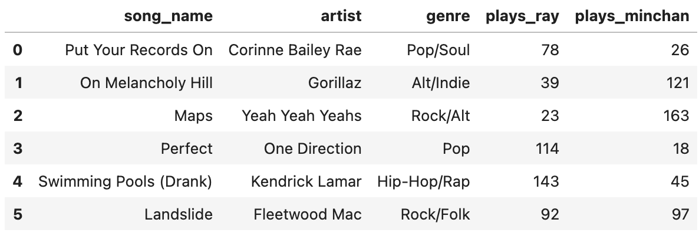

← return to practice.dsc10.com
This quiz was administered in-person. Students were allowed a
double-sided sheet of handwritten notes. Students had 30
minutes to work on the quiz.
This quiz covered Lectures
12-16 of the Winter 2026 offering
of DSC 10.
Note (groupby / pandas 2.0): Pandas 2.0+ no longer
silently drops columns that can’t be aggregated after a
groupby, so code written for older pandas may behave
differently or raise errors. In these practice materials we use
.get() to select the column(s) we want after
.groupby(...).mean() (or other aggregations) so that our
solutions run on current pandas. On real exams you will not be penalized
for omitting .get() when the old behavior would have
produced the same answer.
Ray and Minchan have a joint playlist that combines all songs they
both listened to in the past month. Each row in the songs
DataFrame represents a song in the playlist. The columns are:
song_name (str), artist (str),
genre (str), as well as two columns for the amount of times
either has played each song, plays_ray (int) and
plays_minchan (int). Below are the first six rows of
songs, though there are many more entries.

Minchan wants to see his listening trends. Suppose he takes many
samples of size 30 from plays_minchan and computes their
means. For each statement below, select the best answer.
(a) We expect that at least 75% of all of the
sampled values of plays_minchan lie within 2 standard
deviations of the population mean.
Yes, due to CLT
Yes, due to Chebyshev’s
No, due to CLT
No, due to Chebyshev’s
Yes, but for reasons that have nothing to do with Chebyshev’s or the CLT
No, but for reasons that have nothing to do with Chebyshev’s or the CLT
Answer: Yes, due to Chebyshev’s
This statement is about individual data values, not sample means. Chebyshev’s inequality guarantees that at least 1 - 1/k^2 of data lies within k standard deviations of the mean. With k=2, that’s at least 1 - 1/4 = 75\%.
The average score on this problem was 78%.
(b) We expect that approximately 95% of all sample means lie within 2 standard errors of the population mean.
Yes, due to CLT
Yes, due to Chebyshev’s
No, due to CLT
No, due to Chebyshev’s
Yes, but for reasons that have nothing to do with Chebyshev’s or the CLT
No, but for reasons that have nothing to do with Chebyshev’s or the CLT
Answer: Yes, due to CLT
With a sample size of 30, the CLT tells us the distribution of sample means is approximately normal. For a normal distribution, approximately 95% of values lie within 2 standard deviations (standard errors) of the mean.
The average score on this problem was 66%.
(c) Now assume the distribution of
plays_minchan is right-skewed but with no outliers. Which
of the following statements is true about these statistics of
plays_minchan?
The median is always greater than the mean
The mean is always greater than the median
The mean is usually greater than the median, but not always
The median is usually greater than the mean, but not always
Answer: The mean is usually greater than the median, but not always
In a right-skewed distribution, the long tail on the right pulls the mean upward, so the mean is typically greater than the median. However, this is not a strict rule — it’s possible to construct right-skewed distributions where the mean is less than the median.
The average score on this problem was 45%.
(d) If both Minchan’s and Ray’s plays distributions are normal, will the distribution formed by pooling both of their plays into one combined dataset be approximately normal?
Always
Sometimes
Never
Answer: Sometimes
A mixture of two normal distributions is not necessarily normal. If the two distributions have very different means, the combined distribution may be bimodal. However, if the means and standard deviations are similar enough, the result could still appear approximately normal.
The average score on this problem was 49%.
Select all sampling methods below where the
resulting sample is an SRS of 20 songs from the songs
DataFrame.
Use songs.sample(20, replace=1)
Use
np.random.multinomial(20, np.ones(songs.shape[0]) / songs.shape[0])
to decide how many times to take each row for a sample.
np.random.choice(songs.get("song_name"), 20)
Randomly pick 20 genres without replacement, then within each picked genre, randomly pick a song.
Randomly pick 20 artists without replacement, then within each picked artist, randomly pick a song.
None of the above.
Answer: None of the above
replace=1 means sampling
with replacement, which is not an SRS (SRS requires sampling without
replacement).np.random.multinomial
assigns counts to rows and can select rows multiple times — this is
sampling with replacement, not SRS.np.random.choice on a column
samples values with replacement by default and doesn’t return full
rows.
The average score on this problem was 62%.
(a) Suppose Ray collected an SRS of the whole
playlist (of an unspecified size), storing it in DataFrame
ray_playlist. Complete the code below to bootstrap for an
80% confidence interval for the mean:
boot_means = np.array([])
for i in range(1000):
sim = ray_playlist.___(a)___.get("plays_ray").mean()
boot_means = np.append(boot_means, sim)
left = np.percentile(boot_means, ___(b)___)
right = np.percentile(boot_means, ___(c)___)(a):
Answer:
sample(ray_playlist.shape[0], replace=True)
To bootstrap, we resample from our original sample with replacement, using the same size as the original sample.
The average score on this problem was 74%.
(b):
Answer: 10
For an 80% confidence interval, we want the middle 80% of bootstrap means, leaving 10% in each tail. So the left endpoint is the 10th percentile.
The average score on this problem was 89%.
(c):
Answer: 90
The right endpoint is the 90th percentile, capturing the upper 10% cutoff to keep the middle 80%.
The average score on this problem was 89%.
(b) After generating 1000 bootstrap means from
ray_play, what does the distribution of
boot_means approximate?
The sampling distribution of the sample mean of plays by Ray
The population distribution of plays by Ray
The empirical distribution of plays by Ray
The probability distribution of plays by Ray
Answer: The sampling distribution of the sample mean of plays by Ray
Bootstrapping approximates what would happen if we repeatedly sampled from the population and computed the mean — i.e., the sampling distribution of the sample mean.
The average score on this problem was 50%.
(c) Which statements are correct about the 80% bootstrap confidence interval of the population mean that Ray just computed?
80% of songs have a number of plays by ray that lies within the interval.
There is a 80% probability that the true mean lies in this interval.
80% of such intervals created from repeating the bootstrap process with new samples will contain the true mean.
80% of the bootstrap means lie in the interval.
Answer: Options 3 and 4
[left, right].
The average score on this problem was 72%.
(a) Ray calculated a 95% CLT-based confidence interval for the population mean of his number of plays per song, spanning [60.5, 100.5]. If the sample size used to construct the interval was 25 songs, what is the standard deviation of Ray’s plays?
Note: “Not enough information” is also a possible answer.
Answer: 50
The width of the interval is 100.5 - 60.5 = 40, so the half-width is 20. For a 95% CI, half-width = 2 \times \frac{SD}{\sqrt{n}}. With n = 25: 20 = 2 \times \frac{SD}{5}, so SD = 50.
The average score on this problem was 24%.
(b) If Ray increases the sample size from 25 songs to 100 songs, how does the width of his 95% CLT-based confidence interval change?
Doubles
Halves
Becomes 1/4 as wide
Stays the same
Answer: Halves
The width of a CI is proportional to \frac{1}{\sqrt{n}}. Going from n=25 to n=100 multiplies the sample size by 4, so the width is multiplied by \frac{1}{\sqrt{4}} = \frac{1}{2}, i.e., it halves.
The average score on this problem was 63%.
(c) Now Ray is curious about other confidence
intervals he could have constructed. Given
stats.norm.cdf(1.75) = 0.96, calculate the endpoints of a
92% CLT-based confidence interval.
Note: “Not enough information” is also a possible answer.
Answer: [63, 98]
For a 92% CI, we need 4% in each tail. Since
stats.norm.cdf(1.75) = 0.96, the z-score is 1.75. The
sample mean is the midpoint: (60.5 + 100.5)/2
= 80.5. The SE = SD/\sqrt{n} = 50/5 =
10. The 92% CI is 80.5 \pm 1.75 \times
10 = 80.5 \pm 17.5, giving [63,
98].
The average score on this problem was 63%.
(d) Ray then constructs a 99% CLT-based confidence interval. Select all the cases that could be possible when comparing his new 99% CI to his original 95% CI.
99% CI is wider than 95%
99% CI is smaller than 95%
They have the same width
Answer: 99% CI is wider than 95%
A higher confidence level requires a larger z-score, which always produces a wider interval (given the same sample). So the 99% CI is always wider than the 95% CI.
The average score on this problem was 84%.